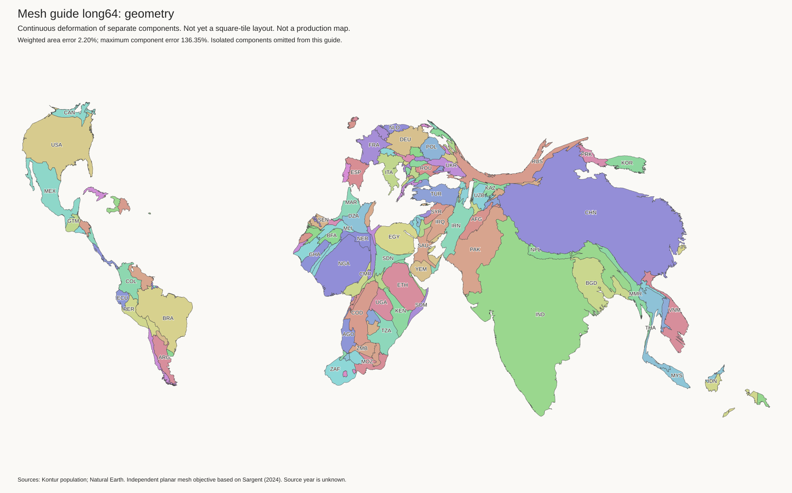
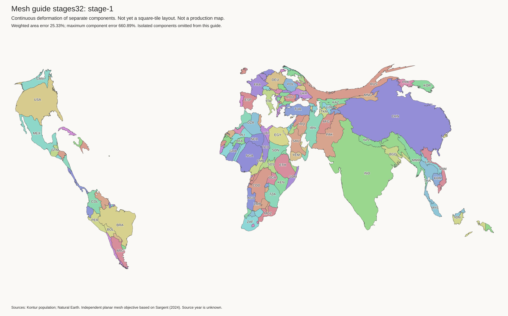
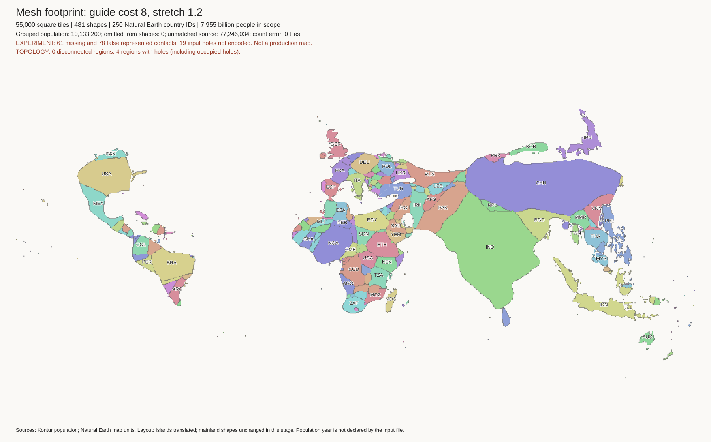

Mesh guide controls: not approved
Return to the world comparison · Method and limits · Saved file hashes
The continuous guides omit isolated components. The final tile layouts restore them with their full budgets. A low weighted area error can hide a large error in a small component. Neither area accuracy nor solver convergence proves good shapes.
Long 64-grid solve
All four stages pass the gradient stopping test. The last stage has 2.20% weighted area error and 136% maximum component error. Russia, Central America, and Southeast Asia still have thin features. Canada is too narrow. This is not an acceptable footprint.

Solver record · Compressed geometry · Numeric mesh arrays
The long 32-grid solve has similar defects. The shorter 64-grid solve has 1.05% weighted error but reaches every iteration limit. Its lower error does not establish better convergence or shape quality.
Shape and area trade-off
These four 32-grid stages use distortion weights 1, 0.3, 0.1, and 0.03. Their weighted area errors are 25.33%, 13.32%, 6.27%, and 2.54%. Earlier stages retain some shapes better but have larger budget errors. All four retain thin features.

Stage 2 · Stage 3 · Stage 4 · Stage records
Population sites carried through the mesh
These exact 55,000-tile layouts use the shorter 32-grid guide. Sites follow its triangle transformations, rather than a global fit. This is a coordinate correction, not a visual improvement. Both worlds have connected components, but Korea remains misplaced and Taiwan has a poor position. Thin coasts remain. Reject both layouts.

Guide cost 8: 61 missing and 78 unsupported component contacts, four region holes, and 319 direction reversals. These are component contact counts, not the matched country counts in the main gallery.
Metrics · Parent records · Compressed cells
Guide cost 0.5: 83 missing and 115 unsupported component contacts, two region holes, and 336 direction reversals. Exact counts do not resolve these defects.